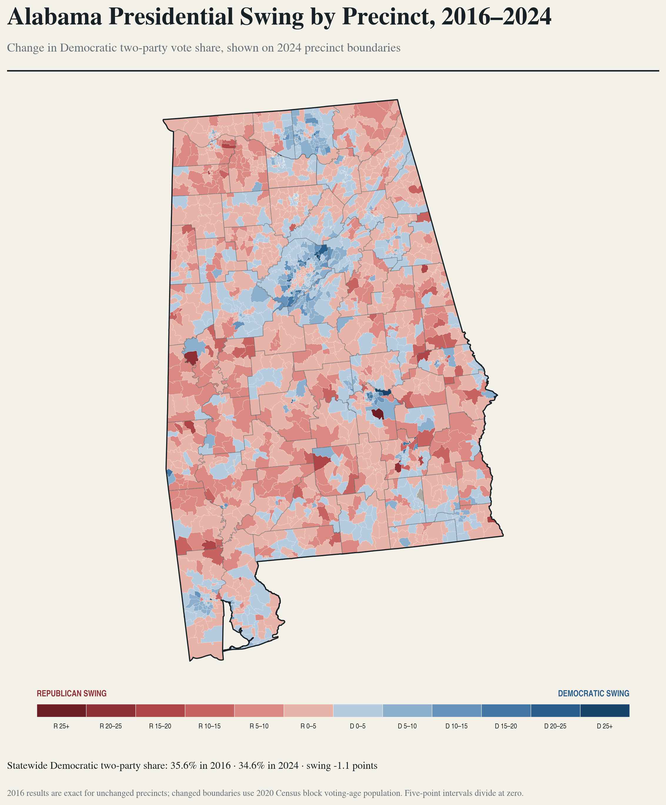
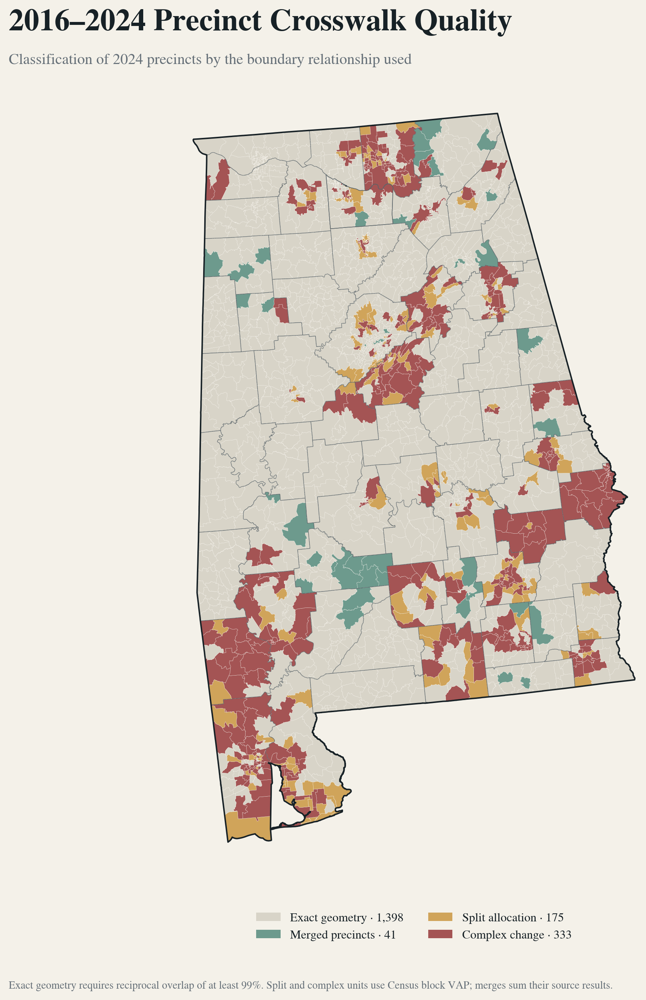
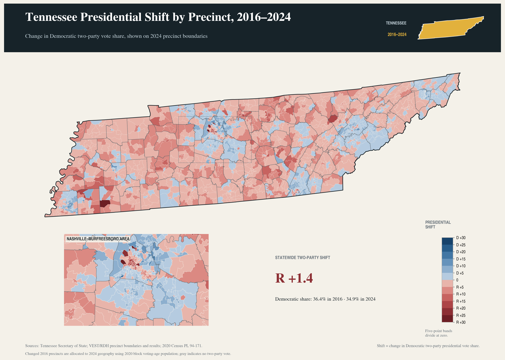
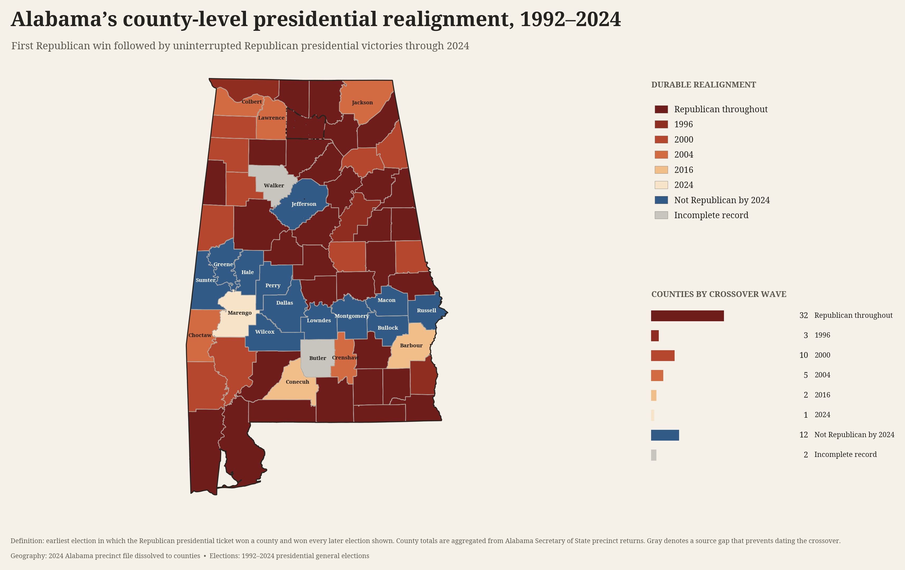
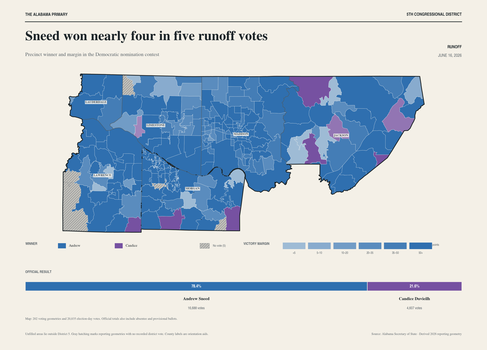

Alabama presidential swing, 2016–2024
Population-weighted allocation reconciles changing precinct boundaries.
This map was created using data from the Redistricting Data Hub. RDH terms.
JACKSON A. HANNAN · ELECTION CARTOGRAPHY
Six finished maps across Alabama and Tennessee, with original Python workflows and saved analytical audits.

Population-weighted allocation reconciles changing precinct boundaries.
This map was created using data from the Redistricting Data Hub. RDH terms.

Exact geometry, merges, splits and complex changes; relationship categories, not confidence intervals.
This map was created using data from the Redistricting Data Hub. RDH terms.

Statewide pattern and Nashville–Murfreesboro inset on a fixed diverging scale.
This map was created using data from the Redistricting Data Hub. RDH terms.

Four metropolitan windows at identical scale; write-ins excluded from two-candidate margin.
This map was created using data from the Redistricting Data Hub. RDH terms.

Thirty-two years of county history; incomplete records remain visibly gray.
This map was created using data from the Redistricting Data Hub. RDH terms.

Original broadsheet design with derived reporting geometry, no-vote hatching and official-total bar.
This map was created using data from the Redistricting Data Hub. RDH terms.